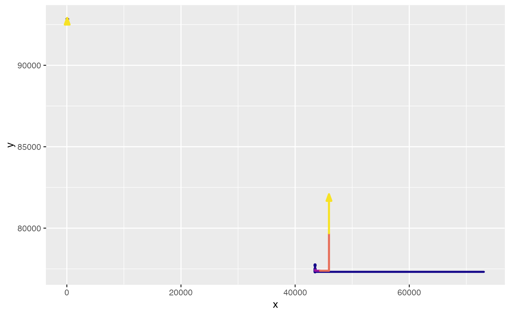

rebound_graphs_helper.RdThis is a helper function for path_graphs().
There is normally no need to call this function.
rebound_graphs_helper(
.path_data,
.points_data = NULL,
.grid_data = NULL,
.indifference_data = NULL,
graph_params = ReboundTools::path_graph_params,
graph_types = ReboundTools::graph_types,
graph_df_colnames = ReboundTools::graph_df_colnames
)A data frame of paths to be added to the graph. The columns "colour" and "size" control the colour and width of the segment.
A data frame of points between rebound effects. Default is NULL, meaning that no data points are to be added to the graphs.
A data frame of lines to be added to the graph. Default is NULL, meaning that no grid lines are to be added to the graphs.
A data frame of indifference curves to be added to the graph. Default is NULL, meaning no indifference curves are added to the graph.
A list of appearance parameters for this graph. Default is ReboundTools::path_graph_params.
A list of graph types. Default is ReboundTools::graph_types.
The names of column names in data frames of graph data. Default is ReboundTools::graph_df_colnames.
A ggplot2 object containing graphs.
load_eeu_data() %>%
rebound_analysis() %>%
energy_paths() %>%
rebound_graphs_helper()
